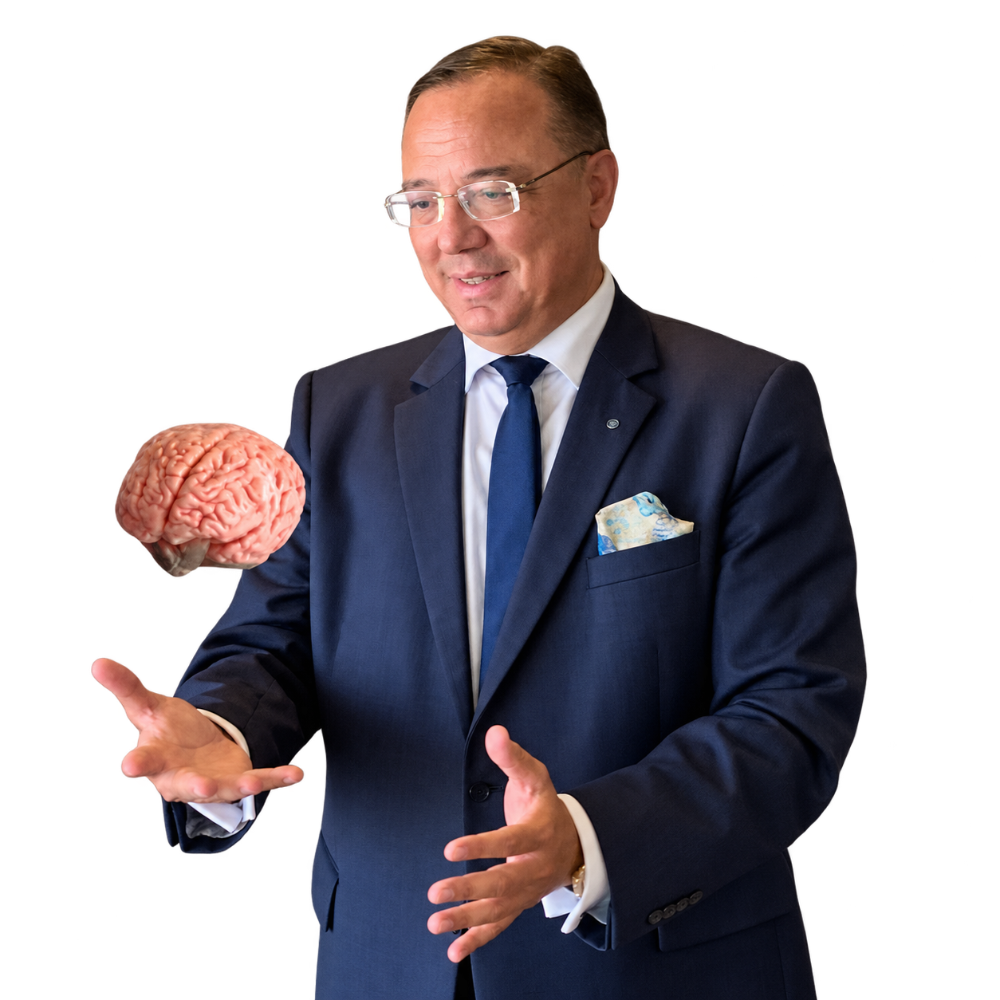
ANA KONUŞMACI
Prof. Dr. Türker Kılıç
Beyin Cerrahı · İstinye Üniversitesi Tıp Fakültesi Dekanı
Beyin cerrahisi, tıp ve bilim eğitimi üzerine çalışır; bağlantısallık ve yaşamdaşlık konularını kitaplarında ele alır.
11. EDK İstinye Üniversitesi Vadi Kampüsü · İstanbul
Eğitimde değişimi birlikte konuşmak, paylaşmak ve deneyimlemek için 2015’ten beri bir araya geliyoruz.
Konferansa
kalan süre
Geçmiş EDK’larda sahnede
EDK, yıllar içerisinde eğitim dünyasının farklı alanlarından çok sayıda önemli akademisyen, eğitim uzmanı, okul yöneticisi ve uygulayıcı öğretmeni ağırladı.
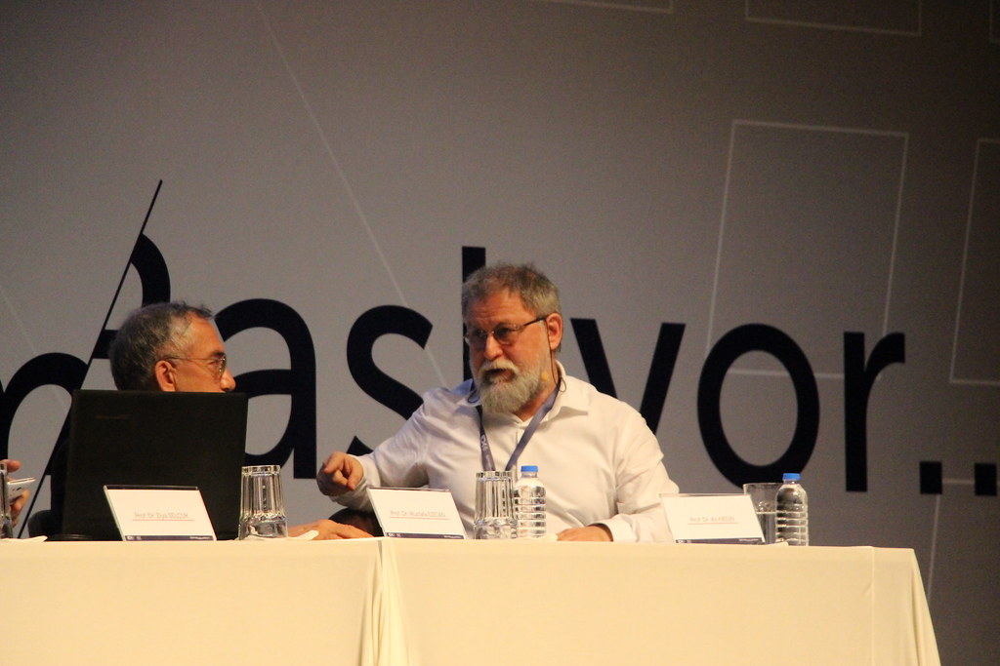
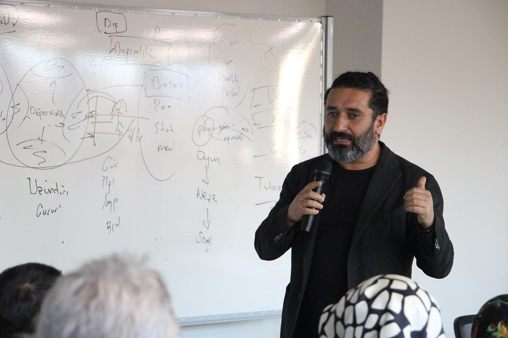
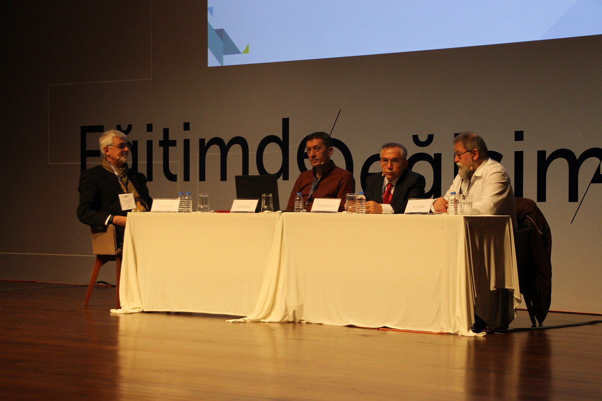
Akademik bilgiyi, sahadaki deneyim ve uygulamayla buluşturmak.
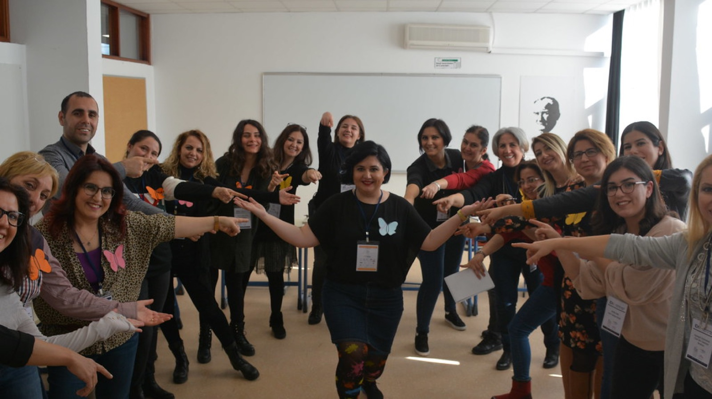
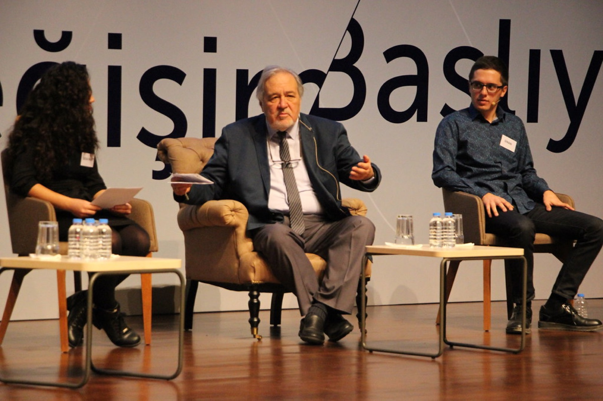
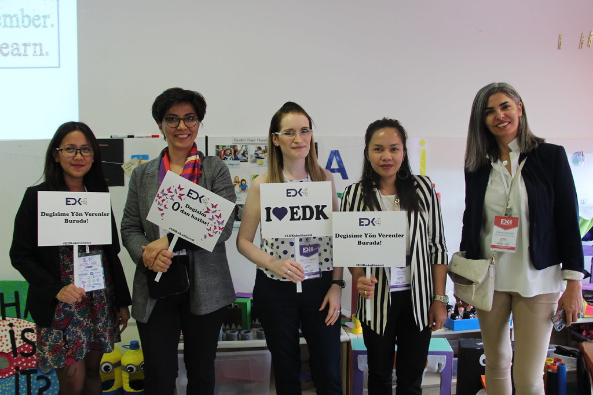

EDK Nedir?
Öğretmenler bir araya gelir, fikirler büyür.
EDK; eğitimde yenilikleri, iyi örnekleri ve sınıf içi deneyimleri paylaşmayı, öğretmenlerin birbirinden öğrenmesini ve güçlü profesyonel bağlantılar kurmasını amaçlayan bir konferans serisi. Gönüllü öğretmenlerin kurduğu, kâr amacı gütmeyen Eğitimde İnovasyon Derneği tarafından 2015’ten beri düzenleniyor.
11. EDK’da
Kimler EDK’da buluşuyor?
Bugüne kadar
İstanbul Ankara İzmir Konya Bursa
Konuşmacılar
Bilimden sınıfa, liderlikten teknolojiye; eğitimde değişimi konuşan isimler.

Beyin Cerrahı · İstinye Üniversitesi Tıp Fakültesi Dekanı
Beyin cerrahisi, tıp ve bilim eğitimi üzerine çalışır; bağlantısallık ve yaşamdaşlık konularını kitaplarında ele alır.
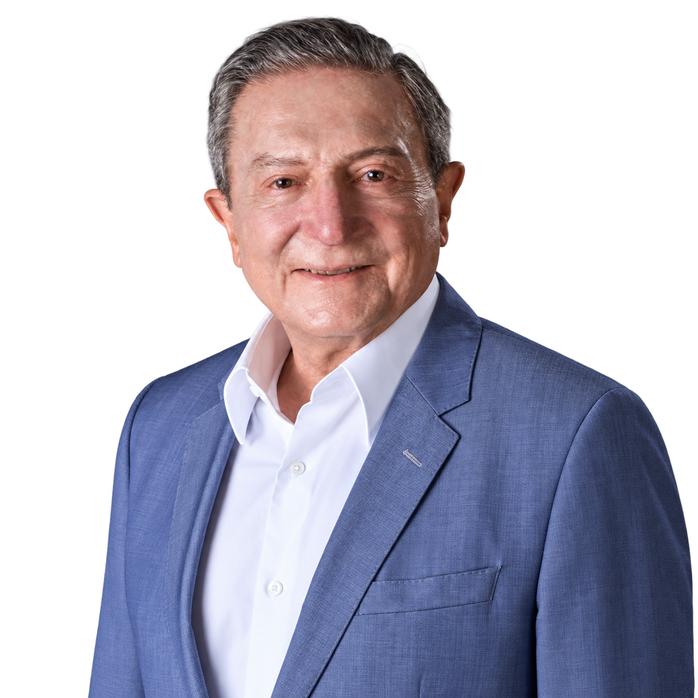
Psikolog · Baltaş Grubu Kurucusu
Psikoloji bilgisini iletişim, çalışma hayatı ve insan davranışlarıyla buluşturan seminerler, uygulamalar ve kitaplar üretir.
Öğretim Üyesi · İstanbul Üniversitesi-Cerrahpaşa
Türkiye Direktörü · Khan Academy
CIS Akreditasyon Koordinatörü · Vizyon Koleji
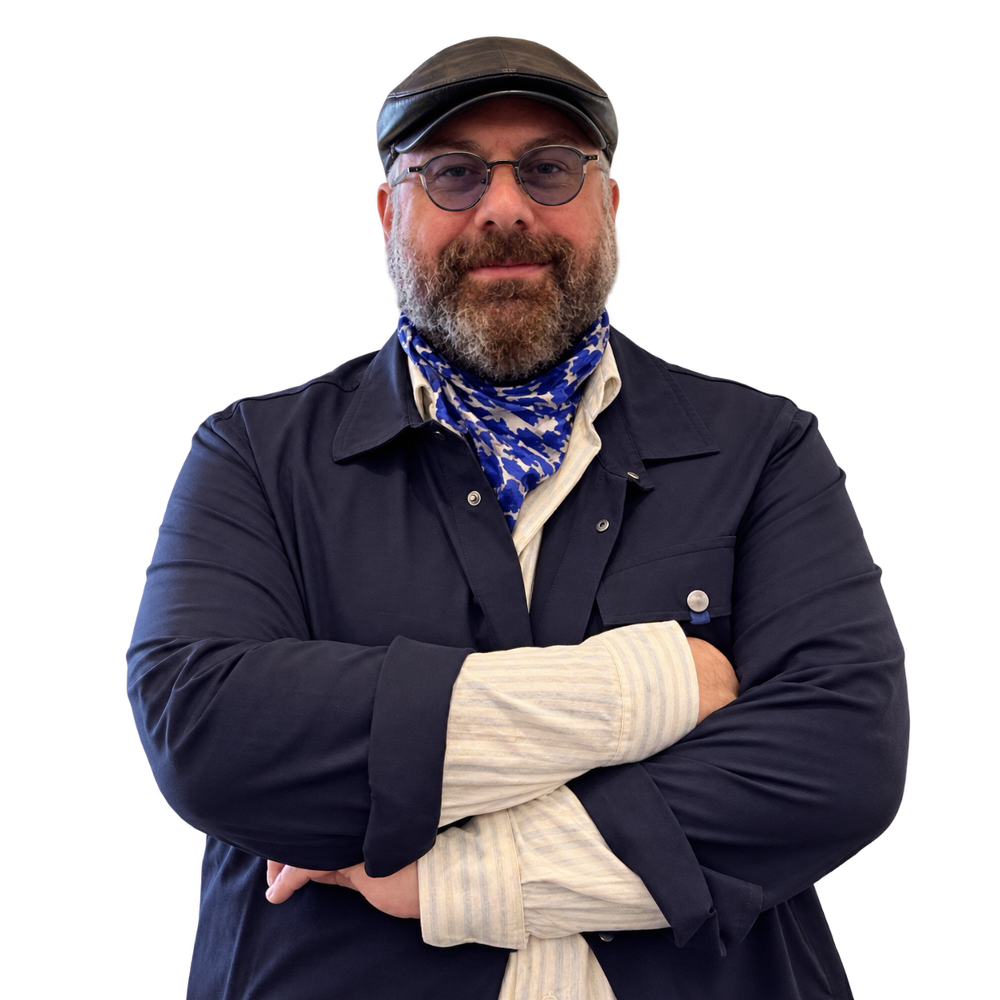
Matematik Öğretmeni · @chefmathematics
Eğitimci · Eğitimpedia / Parenting Office
Dr. Öğretim Üyesi · Bahçeşehir Üniversitesi
Yeni konuşmacılar açıklandıkça bu liste güncellenecek.
EDK’yı farklı kılan
Açılış konuşmaları, paneller, uzman atölyeleri, deneyim paylaşımları, TeachMeet ve Ask Me Anything aynı gün içinde.
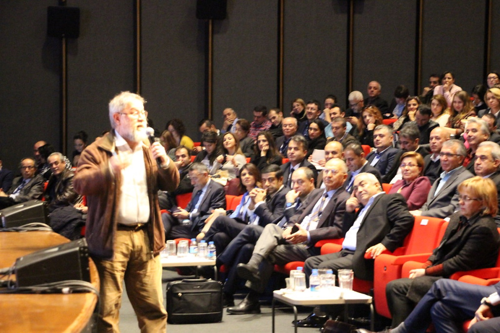
Merak ettiği konuyu alanında uzman bir eğitmenden dinler.
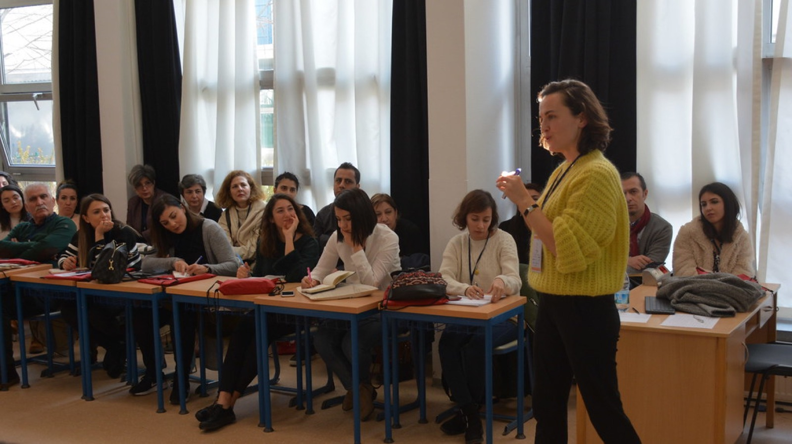
Atölyede uygulayarak konuyu kendisi deneyimler.
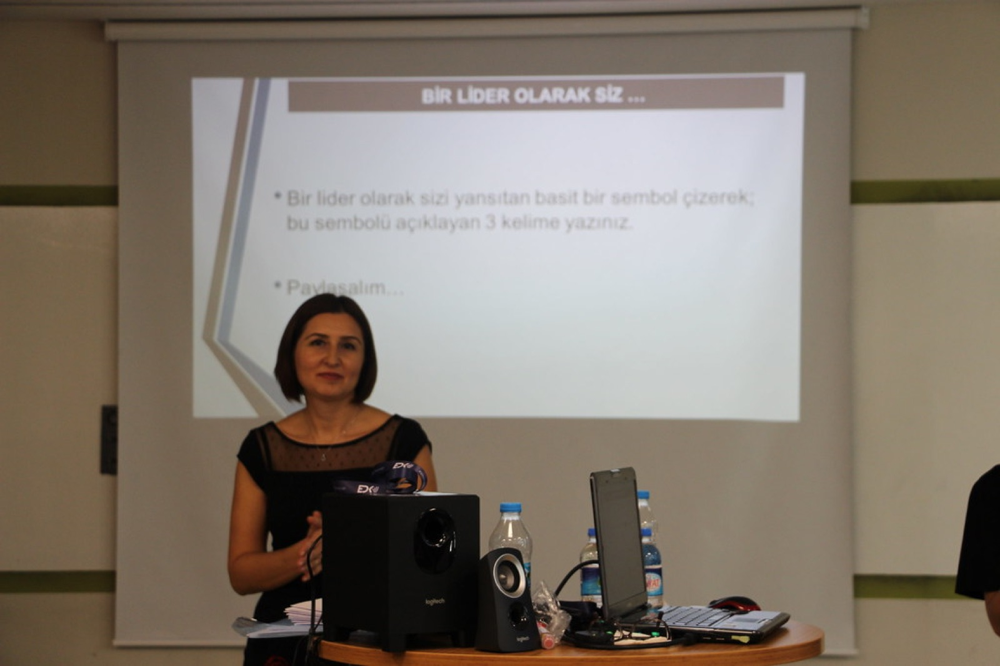
Aynı konunun farklı sınıflarda nasıl uygulandığını öğrenir.
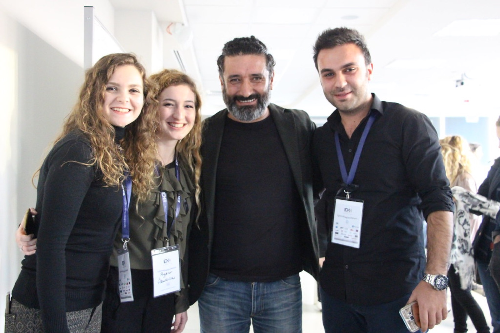
Meslektaşlarıyla deneyimlerini paylaşır, yeni insanlarla tanışır.
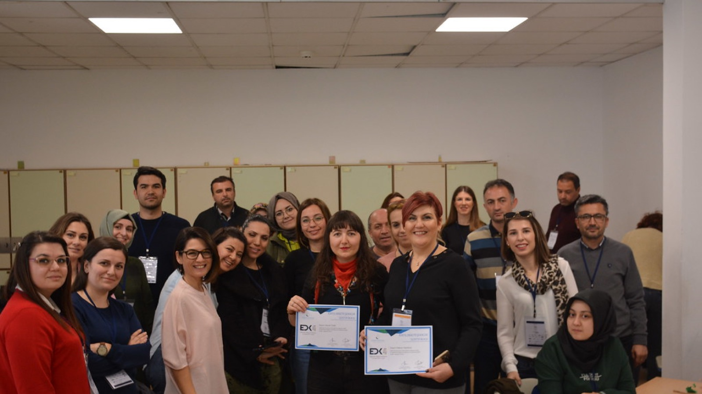
Yeni fikirler, yeni bağlantılar ve öğrencileri için yeni projelerle.
“Öğretmene yalnızca bilgi vermek değil, ilham vermek.”
Tanıtım Filmi
Atölyeler, sahneler ve öğretmenlerin buluşması; geçmiş EDK’lardan kareler.
Salon Temaları
Eğitimde değişimi farklı temalar, uygulamalı atölyeler ve deneyim paylaşımlarıyla birlikte keşfediyoruz.
Planlanan salon temaları · Oturum içerikleri netleştikçe paylaşılacak.
Mekân
, İstanbul.
Program
Sabah öğren, öğleden sonra deneyimleri keşfet, gün boyunca bağlantılar kur.
Sabah
Katılımcıların karşılanması, kayıt, kahve ve networking.
120 dk
Öğleden sonra
45 dk
45 dk
* Değişiklik ve güncellemeler yapılacaktır.
Galeri
Geçmiş EDK buluşmalarından gerçek kareler.
Destekçiler
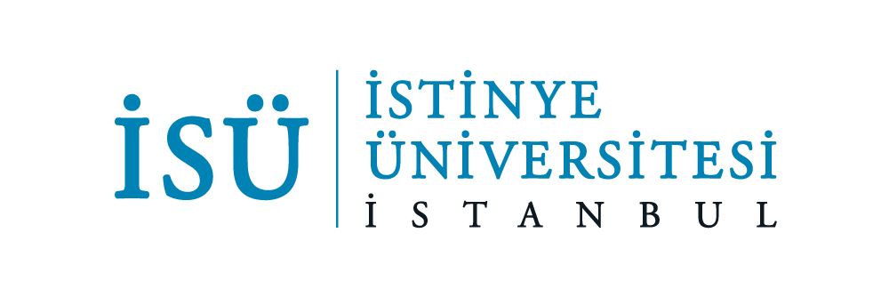
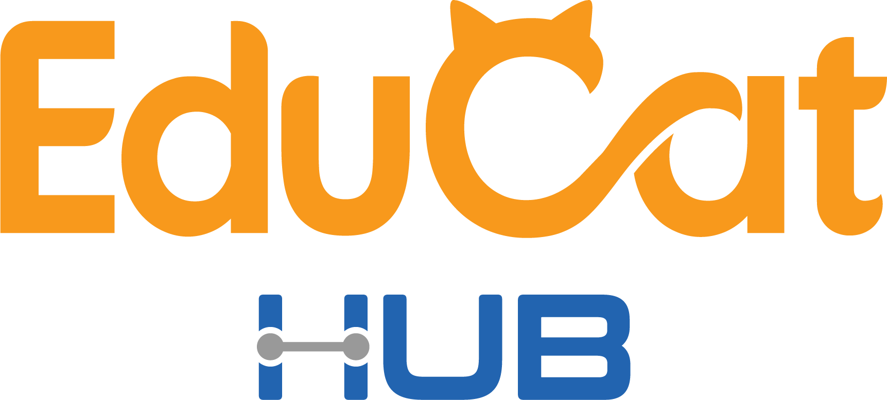
SSS
Eğitimde Değişim Konferansı, öğretmenleri ve eğitim alanında çalışanları deneyimlerini paylaşmak ve birlikte öğrenmek için buluşturan bir etkinliktir. Eğitimde İnovasyon Derneği tarafından düzenlenir.
19 Aralık 2026 Cumartesi günü, İstanbul’daki İstinye Üniversitesi Vadi Ana Kampüs’te.
Öğretmenler, akademisyenler, okul yöneticileri, öğretmen adayları ve eğitimle ilgilenen herkes için.
Katılımcı başvuru bağlantısı yakında eklenecek.
Sunum ve Atölye Başvurusu seçeneğinden öneri formunu açabilirsiniz.
Sabah açılış, keynote konuşmaları ve paralel atölyeler; öğleden sonra oturumlar ve kapanış yer alıyor. Saatli gün akışını Program bölümünde bulabilirsiniz; oturum başlıkları daha sonra duyurulacak.
Açıklanan isimleri Konuşmacılar bölümünde görebilirsiniz. Yeni isimler netleştikçe liste güncellenecek.
İstinye Üniversitesi Vadi Ana Kampüs, İstanbul. Haritada görüntüleyin ↗
Kampüse ulaşım ve giriş ayrıntıları etkinlik yaklaştığında bu bölümde güncellenecek.
Sponsorluk seçenekleri ve iletişim bilgileri netleştiğinde burada paylaşılacak. Üst menüdeki Sponsorluk düğmesinden de güncel durumu görebilirsiniz.
11. EDK’nın amacı
Katılımcı olarak gel ya da sınıfındaki uygulamayı bir sunum veya atölyeyle paylaş.
İletişim